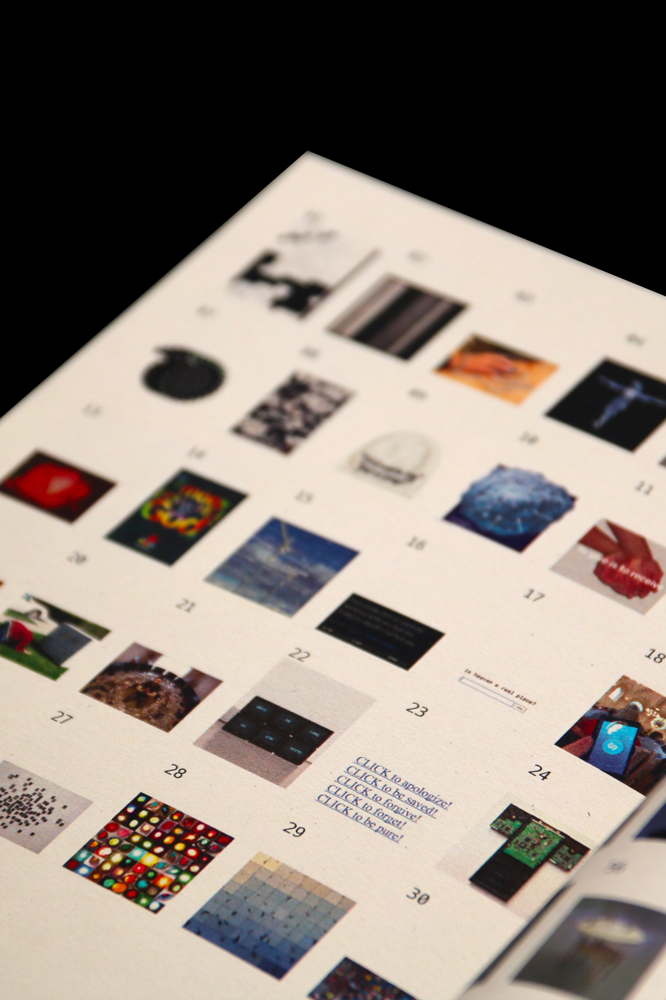
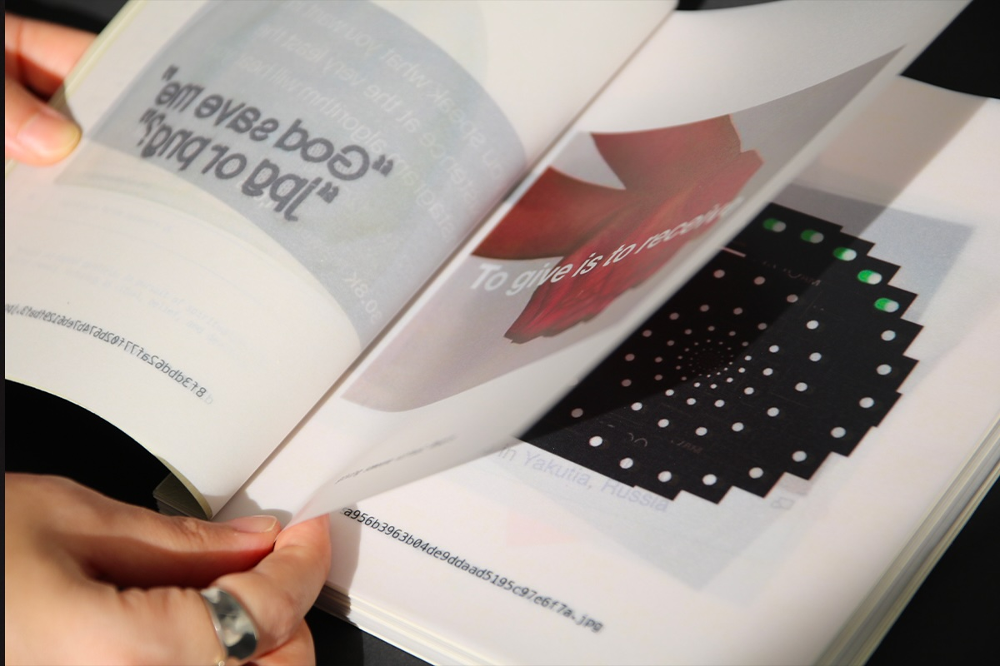
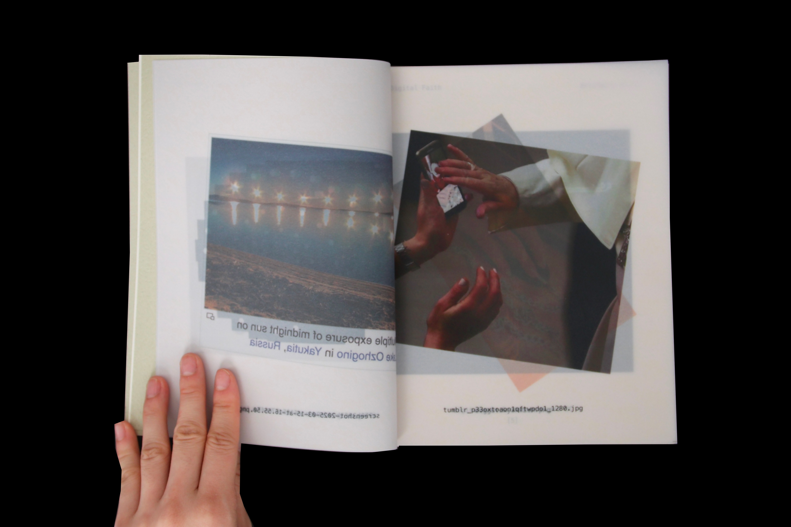
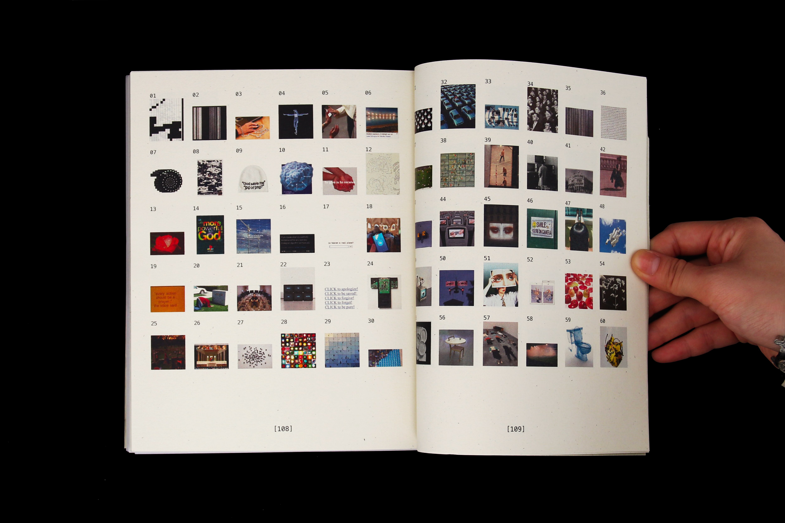

Site Explorations documents the origins and circulation of found internet images through reverse image search.
Framed as an archaeological record, the project treats each image as a digital object—indexed, traced, and recontextualized through its source and movement across the web.
Design
Drawing from methods of excavation and site mapping, the publication organizes web images through indexing, sequencing, and annotation.
The resulting system shifts attention away from the images themselves and towards the networks, histories, and relationships that surround them.
Outcome
Printed publication documenting the origins of collected web images
Indexing system for navigating fragmented digital content
Research framework exploring circulation, attribution, and digital provenance
Context
RoleDesigner
Duration1 month
SkillsInDesign, Photoshop, Are.na, Bookbinding
CollaboratorsElaine Lopez (Advisor)




Reflection
In this book, the act of tracing images back to their origins reframes them as cultural artifacts beyond random digital objects.
By documenting where they originate and how they circulate, the project suggests that digital images carry histories worth preserving—demanding a level of attention and care typically reserved for physical objects.
What happens when digital traces are treated with the logic of physical artifacts?